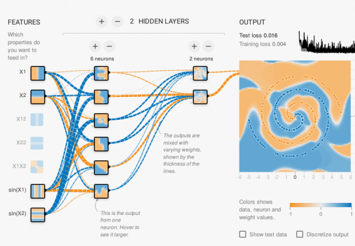

Play with the Machine's Neurons
The online software TensorFlow allows to build artificial neural networks and to test their responses for different types of problems and on different types of data. In the "Classification" problem type, the objective is to separate blue and orange coloured points. An application of this type of problem is, for example, a photo classification algorithm. In the example below, there is one input (feature) that separates the points horizontally and another that separates vertically. By combining these two inputs, we obtain an oblique separation. The result (output) is well adapted to the type of data chosen.

TensorFlow: Some explanations before trying the simulation of a neural network
Source: translation from Pixees French web site
What is a neural network and how does it work? A neural network is a generic mechanism composed of small units (pseudo-neurons) connected to each other. Each unit performs a very simple operation: it takes input values, combines them very simply (a simple averaging with coefficients) and applies a transformation on the result (e.g. keeps only positive values).
The coefficients used to weight the average are the parameters of this algorithm. It is the combination of a very, very large number of these units that allows very complex operations to be performed. A network of such "neurons" is obtained by accumulating several layers of such units. The input is the data that we want to process. They are transformed through all the layers and the last layer gives as output a prediction on this data, for example to detect if there is a face in an image. The neural network is thus a parameterized function with many coefficients (called "weights") and it is the choice of these weights that defines the processing carried out.
Where are the neurons in TensorFlow? On the TensorFlow web interface, a network of a dozen neurons, each with between 3 and 10 parameters, can easily be created. The calculated output thus depends on hundreds of parameters in addition to the two coordinates (x,y) of the input point. On the interface, each square represents a neuron and the colour of the pixel of coordinates (x,y) in the square represents the output of the neuron when we put (x,y) in input of the network. If there is only one neuron at the output, it is represented with a larger square on the right of the network. The parameters of the network are initialized with random values.
But how do you learn these weights? Supervised learning consists of providing examples of data with the solution to be found in order to train the network to adjust these weights as required. In the example in the figure above, it is a series of points in a square, each with an expected colour (blue or orange), with the aim of predicting the colour of the point at a given location. A classical algorithm of progressive adjustment of the weights is used to find the parameters in question. The "play" button at the top left of the interface is used to launch this algorithm, and the output of the neural network is then seen to evolve during the "learning" process: the background colour of the output neuron tends to take on the colour of the training points that are drawn over it. Another part of the dataset is then used to test the quality of the resulting function of the network. A curve at the top right shows the error rate of the data used for learning (to check that the weights have adjusted properly) and the error rate of the other test data (to check that what has been learned generalises well to new data). Buttons on the left side allow to adjust the distribution of the data between the training and the test set and also to add errors to the data (noisy data) to see if the mechanism is robust to these errors.
In practice, we manage to find satisfactory parameters, but there is no real theoretical framework for formalising all this, it's a matter of experimentation: choosing the right number of neurons, the right number of layers of neurons, what preliminary calculations to add as input (for example multiplying the inputs to increase the degrees of freedom for the calculation). These kinds of techniques can produce impressive results in practice, such as in voice or object recognition in an image.
However, understanding why (and how) such good results are obtained is still a fairly open scientific question.
Try TensorFlow
Click on the image below to access the TensorFlow application in a new window